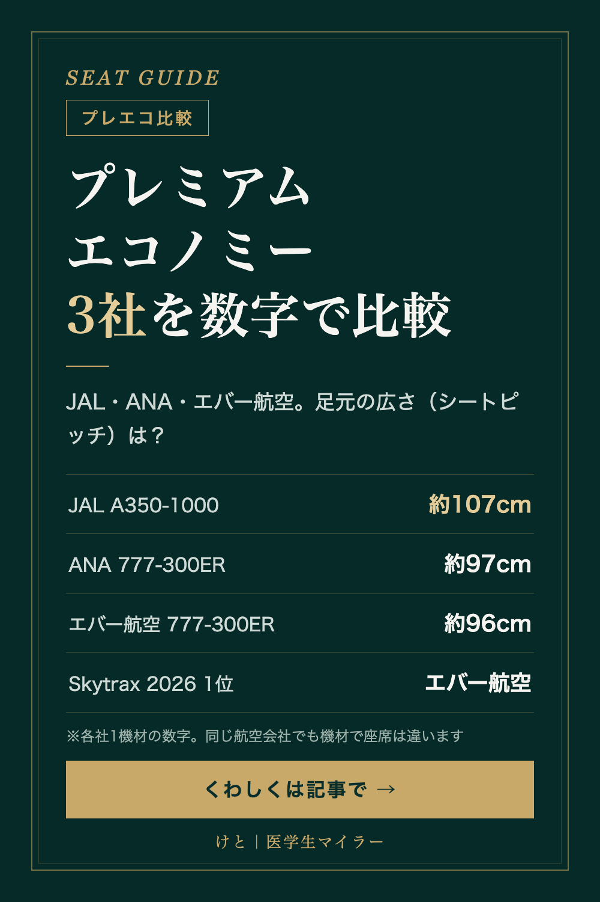

SEAT GUIDE
プレミアムエコノミー比較｜JAL・ANA・エバー航空を座席の数字で比べる
2026/10/03 時点の情報
ビジネスクラスは高いけれど、エコノミーで長距離はつらい。そんなときの選択肢がプレミアムエコノミーです。日本から乗りやすいJAL・ANA・エバー航空の3社を、ランキングと座席の数字で比べました。

Skytrax 2026 プレミアムエコノミー部門の順位
航空会社の格付けで知られるSkytraxの2026年のプレミアムエコノミー部門では、1位がエバー航空、JALは6位、ANAは14位でした。エバー航空は、アメニティの部門賞でも1位です。
座席の数字で比べる（各社1機材ずつ）
| JAL A350-1000 | ANA 777-300ER | エバー航空 777-300ER | |
|---|---|---|---|
| 配列 | 2-4-2 | 2-4-2 | 2-4-2 |
| シートピッチ | 約107cm（42インチ） | 約97cm（38インチ） | 約96cm（38インチ） |
| 座席幅 | 最大約48cm（一部の席を除く） | 約49cm | 約49cm |
ANAの777-300ERは、プレミアムエコノミーの仕様が複数あり、ANA公式サイトにもページが2つあります。ここでは出典欄に載せたページの数字を使っています。
足元の広さ（シートピッチ）では、JALのA350-1000が一歩リードしています。
JAL A350-1000の座席の特徴
いちばんの特徴は、背もたれが後ろに倒れない「フィックスド・バック」という作りです。後ろの席に背もたれが倒れてこないので、前の人のリクライニングを気にしなくて済みます。
さらに、クラスで初めての電動リクライニングで、モニターは16インチの4K、電動レッグレストも付いています。
数字だけでは決まらない
エバー航空は、座席の数字はANAとほぼ同じなのに、Skytraxの総合では1位です。座席の広さだけでは評価が決まらない、というのが面白いところです。
そして、同じ航空会社でも機材が違えば座席も違います。予約するときは、機材と座席の仕様まで確認してみてください。
※座席の数字は各社の公式情報・報道をもとにしています（2026年10月3日時点）。運賃や必要マイル数は含めていません。